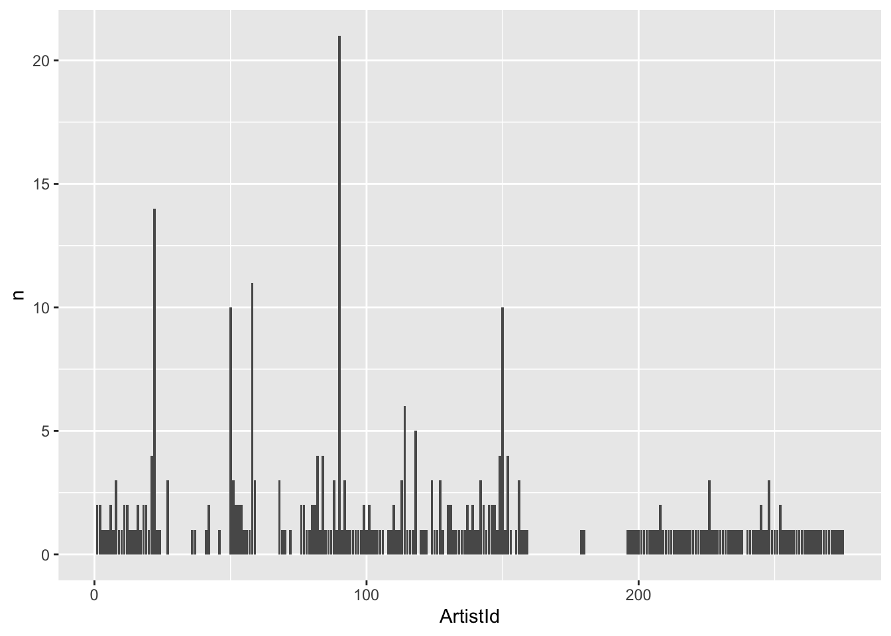

install.packages("DBI")
install.packages("RSQLite")
install.packages("dbplyr")Pre-lecture materials
Read ahead
Read ahead
Before class, you can prepare by reading the following materials:
- Add here.
- Add here.
Acknowledgements
Material for this lecture was borrowed and adopted from
- Add here.
Learning objectives
Learning objectives
At the end of this lesson you will:
- Add here.
Add lecture here
Before we begin, you will need to install these packages
Now we load a few R packages
library(tidyverse)
library(DBI)
library(RSQLite)
library(dbplyr)Reading in from SQLite database
Another important type of data you might interact with are databases (such as SQL or SQLite). There are several ways to query databases in R.
First, we will download a .sqlite database. This is a portable version of a SQL database. For our purposes, we will use the chinook sqlite database here. The database represents a “digital media store, including tables for artists, albums, media tracks, invoices and customers”.
From the Readme.md file:
Sample Data
Media related data was created using real data from an iTunes Library. It is possible for you to use your own iTunes Library to generate the SQL scripts, see instructions below. Customer and employee information was manually created using fictitious names, addresses that can be located on Google maps, and other well formatted data (phone, fax, email, etc.). Sales information is auto generated using random data for a four year period.
library(here)here() starts at /Users/stephaniehicks/Documents/github/teaching/jhustatprogramming2022if(!file.exists(here("data", "Chinook.sqlite"))){
file_url <- paste0("https://github.com/lerocha/chinook-database/raw/master/ChinookDatabase/DataSources/Chinook_Sqlite.sqlite")
download.file(file_url,
destfile=here("data", "Chinook.sqlite"))
}
list.files(here("data"))[1] "Chinook.sqlite" "SRR1039508_subset_1.fastq"
[3] "SRR1039509_subset_1.fastq" "SRR1039512_subset_1.fastq"
[5] "SRR1039513_subset_1.fastq"The main workhorse packages that we will use are the DBI and dplyr packages. Let’s look at the DBI::dbConnect() help file
?DBI::dbConnectSo we need a driver and one example is RSQLite::SQLite(). Let’s look at the help file
?RSQLite::SQLiteOk so with RSQLite::SQLite() and DBI::dbConnect() we can connect to a SQLite database. Let’s try that with our Chinook.sqlite file that we downloaded. Chinook.sqlite
library(DBI)
conn <- DBI::dbConnect(RSQLite::SQLite(),
here("data", "Chinook.sqlite"))
conn<SQLiteConnection>
Path: /Users/stephaniehicks/Documents/github/teaching/jhustatprogramming2022/data/Chinook.sqlite
Extensions: TRUESo we have opened up a connection with the SQLite database. Next, we can see what tables are available in the database using the dbListTables() function:
dbListTables(conn) [1] "Album" "Artist" "Customer" "Employee"
[5] "Genre" "Invoice" "InvoiceLine" "MediaType"
[9] "Playlist" "PlaylistTrack" "Track" From RStudio’s website, there are several ways to interact with SQL Databases. One of the simplest ways that we will use here is to leverage the dplyr framework.
“The
dplyrpackage now has a generalized SQL backend for talking to databases, and the newdbplyrpackage translates R code into database-specific variants. As of this writing, SQL variants are supported for the following databases: Oracle, Microsoft SQL Server, PostgreSQL, Amazon Redshift, Apache Hive, and Apache Impala. More will follow over time.
So if we want to query a SQL databse with dplyr, the benefit of usingdbplyr` is:
“You can write your code in
dplyrsyntax, anddplyrwill translate your code into SQL. There are several benefits to writing queries indplyrsyntax: you can keep the same consistent language both for R objects and database tables, no knowledge of SQL or the specific SQL variant is required, and you can take advantage of the fact thatdplyruses lazy evaluation.
Let’s take a closer look at the conn database that we just connected to:
library(dbplyr)
src_dbi(conn)src: sqlite 3.39.4 [/Users/stephaniehicks/Documents/github/teaching/jhustatprogramming2022/data/Chinook.sqlite]
tbls: Album, Artist, Customer, Employee, Genre, Invoice, InvoiceLine,
MediaType, Playlist, PlaylistTrack, TrackYou can think of the multiple tables similar to having multiple worksheets in a spreadsheet.
Let’s try interacting with one.
Querying with dplyr syntax
First, let’s look at the first ten rows in the Album table.
tbl(conn, "Album") %>%
head(n=10)# Source: SQL [10 x 3]
# Database: sqlite 3.39.4 [/Users/stephaniehicks/Documents/github/teaching/jhustatprogramming2022/data/Chinook.sqlite]
AlbumId Title ArtistId
<int> <chr> <int>
1 1 For Those About To Rock We Salute You 1
2 2 Balls to the Wall 2
3 3 Restless and Wild 2
4 4 Let There Be Rock 1
5 5 Big Ones 3
6 6 Jagged Little Pill 4
7 7 Facelift 5
8 8 Warner 25 Anos 6
9 9 Plays Metallica By Four Cellos 7
10 10 Audioslave 8The output looks just like a data.frame that we are familiar with. But it’s important to know that it’s not really a dataframe. For example, what about if we use the dim() function?
tbl(conn, "Album") %>%
dim()[1] NA 3Interesting! We see that the number of rows returned is NA. This is because these functions are different than operating on datasets in memory (e.g. loading data into memory using read_csv()). Instead, dplyr communicates differently with a SQLite database.
Let’s consider our example. If we were to use straight SQL, the following SQL query returns the first 10 rows from the Album table:
SELECT *
FROM `Album`
LIMIT 10In the background, dplyr does the following:
- translates your R code into SQL
- submits it to the database
- translates the database’s response into an R data frame
To better understand the dplyr code, we can use the show_query() function:
Album <- tbl(conn, "Album")
show_query(head(Album, n = 10))<SQL>
SELECT *
FROM `Album`
LIMIT 10This is nice because instead of having to write the SQL query ourself, we can just use the dplyr and R syntax that we are used to.
However, the downside is that dplyr never gets to see the full Album table. It only sends our query to the database, waits for a response and returns the query. However, in this way we can interact with large datasets!
Many of the usual dplyr functions are available too:
select()filter()summarize()
and many join functions.
Ok let’s try some of the functions out. First, let’s count how many albums each artist has made.
tbl(conn, "Album") %>%
group_by(ArtistId) %>%
summarize(n = count(ArtistId)) %>%
head(n=10)# Source: SQL [10 x 2]
# Database: sqlite 3.39.4 [/Users/stephaniehicks/Documents/github/teaching/jhustatprogramming2022/data/Chinook.sqlite]
ArtistId n
<int> <int>
1 1 2
2 2 2
3 3 1
4 4 1
5 5 1
6 6 2
7 7 1
8 8 3
9 9 1
10 10 1Next, let’s plot it.
tbl(conn, "Album") %>%
group_by(ArtistId) %>%
summarize(n = count(ArtistId)) %>%
arrange(desc(n)) %>%
ggplot(aes(x = ArtistId, y = n)) +
geom_bar(stat = "identity")
Let’s also extract the first letter from each album and plot the frequency of each letter.
tbl(conn, "Album") %>%
mutate(first_letter = str_sub(Title, end = 1)) %>%
ggplot(aes(first_letter)) +
geom_bar()
Post-lecture materials
Final Questions
Here are some post-lecture questions to help you think about the material discussed.
Questions
- Add here.
Additional Resources
Tip
- Add here.